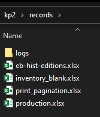

records Folder
A collection of spreadsheets and other documents recording details of the production and analytical work.
All of the documents recording essential data about the project are stored here. This includes data about the print editions used as sources for the project, records of when files were generated, spreadsheets about which steps are completed for each section, and log files.

Note:
- The print-pagination.xslx file records the page spans for each letter in the different editions of the Encyclopedia Britannica.
- The production.xslx file documents the exact contents of each page section we create and its stage in the production process.
- Use inventory-blank.xslx to create new inventory files for sections of each edition during the OCR process.